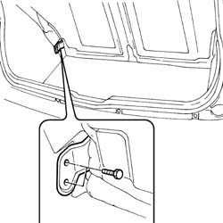
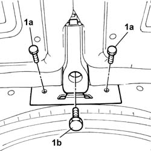
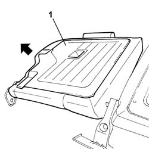
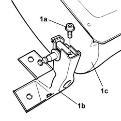
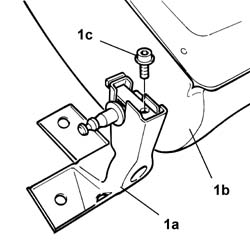

7050A21 One fixed rear bench seat SPLIT BACKREST left or right RR
- Path
- Procedures > 70 FITTINGS > 7050 REAR SEATS > 7050A rear seat assembly > 7050A21 One fixed rear bench seat SPLIT BACKREST left or right RR
- Kind
- repair procedure (removal / refitting; the operation number is the code)
- Applies to
- all engines; all production periods
- Interactive page
- https://sloeber94.github.io/elrnDB-fPnd/en/#/2753267
Applies to: all engines; all production periods
 Removing
Removing
 Refitting
Refitting7050B10 l/h or r/h head restraint (one) of rear seat - r+r
1. Undo the bots fixing the split rear backrest to the bodyshell.
Carry out the same operation on both sides.

Applies to: all engines; all production periods
Remove the load carrying platform cover so that the lower backrest fixing bolts are accessible.
1. Undo the fixing bolts (1a) on the bodyshell and the bolt (1b) joining the backrest/cushion.

Applies to: all engines; all production periods
Remove the split backrest assembly and place it on the bench.
1. Release the left backrest and remove it.

Applies to: all engines; all production periods
1. Undo the fixing bolt (1a) and separate the bracket (1b) from the right backrest (1c).

Applies to: all engines; all production periods
Refitting
Removing1. Fit the bracket (1a) to the right rear backrest (1b) and tighten the fixing bolt (1c).

Applies to: all engines; all production periods
Fit the right rear backrest.
Fit the split rear backrest assembly in position.
1. Tighten the fixing bolts (1a) on the bodyshell and the backrest/cushion fixing bolt (1b).
Applies to: all engines; all production periods
Fit the load platform cover.
Tighten the split rear backrest fixing bolts to the bodyshell.
Carry out the same operation on both sides.